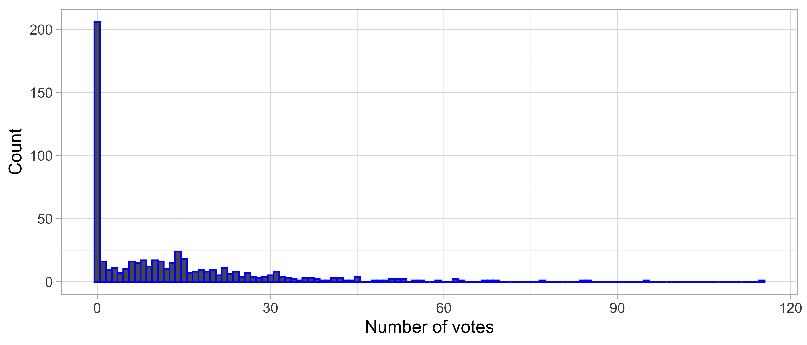
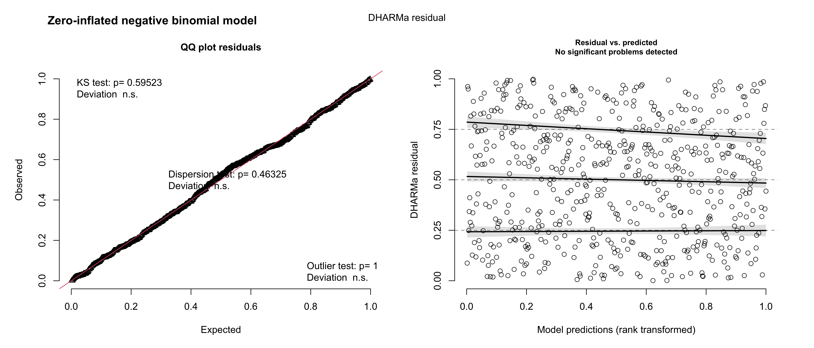
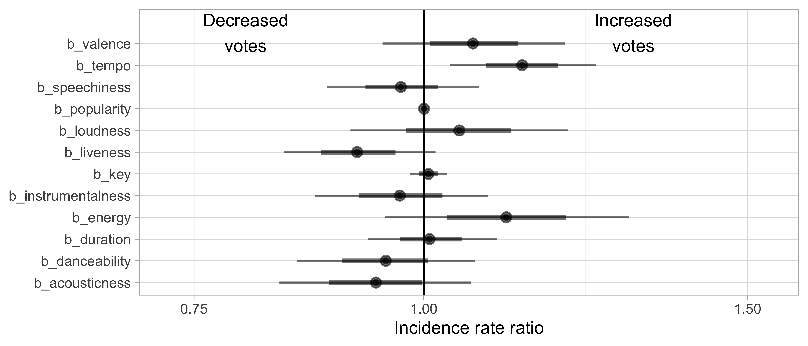

| Total votes | Rank | |
|---|---|---|
| Omar | 539 | 1 |
| Sean | 474 | 2 |
| Bonic | 438 | 3 |
| Lex | 414 | 4 |
| Wilson | 409 | 5 |
| Mitch | 345 | 6 |
| Jonny | 310 | 7 |
| Em | 292 | 8 |
| Michael | 242 | 9 |
| Glen | 235 | 10 |
| Veronica | 230 | 11 |
| Tish | 227 | 12 |
| Erana | 219 | 13 |
| Anna | 214 | 14 |
| Pollard | 199 | 15 |
| Oli | 193 | 16 |
| Claudia | 188 | 17 |
| Tom Payne | 184 | 18 |
| Josh | 178 | 19 |
| Anushka | 167 | 20 |
| Bibby | 134 | 21 |
| Liam | 109 | 22 |
| Zhang | 76 | 23 |
| Warmy | 36 | 24 |
Song day 2023 prediction model
At the beginning of the film “The Social Network”, we are made aware that Eduardo Saverin (played by Andrew Garfield) had made $300,000 in one summer by trading oil futures. Mark Zuckerberg (played by Jesse Eisenberg), somewhat tongue-in-cheek, explains to Erica Albright (played by Rooney Mara) that Eduardo was able to do this because “He likes meteorology.” Albright, confused, responds, “You said it was oil futures?” Zuckerberg, triumphant that his (soon to be ex-) girlfriend has walked into his trap, explains: “You can read the weather, you can predict the price of heating oil!”
Like Eduardo, we like making predictions. However, we aren’t smart enough to use them to make money, so instead, we will use them to make Pollard do more shots of fireball (admittedly a relatively straightforward task).
Shout out to Sean for collecting all these data. Unfortunately we only have data from Song Days 2 and 3, but it’s enough to work with.
But before we dive in, we need to give out 4 awards based on cumulative evidence from the last 2 song days.
1 Award: Overall best performer
Let’s see who has accumulated the most votes over the 2 years. Devillee, Niko, Dee, Steph, and Braith submitted songs in Song day 2 but not 3. Soony, Bods, Eleanor, Seiya, and Holby submitted songs for Song day 3 but not 2. So, omitted these people.
Below in Table 1 I show the ranked for total cumulative votes.
2 Award: Best performer on average
But that’s not the whole story, is it. We’re not just interested in the total number of votes someone got, we’re interested also in the average votes. Because the mean will be a highly skewed metric in our data, let’s use the median (middle) number of votes.
| Median number of votes | Rank | |
|---|---|---|
| Sean | 20.0 | 1.0 |
| Lex | 17.5 | 2.5 |
| Wilson | 17.5 | 2.5 |
| Bonic | 14.0 | 5.0 |
| Em | 14.0 | 5.0 |
| Michael | 14.0 | 5.0 |
| Mitch | 13.5 | 7.0 |
| Jonny | 11.5 | 8.0 |
| Anna | 11.0 | 9.0 |
| Tish | 8.5 | 10.0 |
| Erana | 8.0 | 11.5 |
| Omar | 8.0 | 11.5 |
| Claudia | 6.0 | 13.5 |
| Josh | 6.0 | 13.5 |
| Oli | 4.0 | 15.0 |
| Bibby | 3.5 | 16.0 |
| Pollard | 2.0 | 17.5 |
| Veronica | 2.0 | 17.5 |
| Tom Payne | 1.5 | 19.0 |
| Glen | 1.0 | 20.0 |
| Anushka | 0.0 | 22.5 |
| Liam | 0.0 | 22.5 |
| Warmy | 0.0 | 22.5 |
| Zhang | 0.0 | 22.5 |
3 Award: Most consistent performer
And the most consistent performer, indicated by the percentage of songs which got >0 votes in Table 3:
| % of songs of 0 votes | Rank | |
|---|---|---|
| Sean | 0 | 1.0 |
| Wilson | 5 | 2.0 |
| Bonic | 10 | 3.5 |
| Lex | 10 | 3.5 |
| Mitch | 15 | 5.0 |
| Anna | 19 | 6.0 |
| Em | 20 | 7.5 |
| Tish | 20 | 7.5 |
| Erana | 21 | 9.0 |
| Josh | 26 | 10.0 |
| Omar | 30 | 11.0 |
| Claudia | 35 | 12.5 |
| Jonny | 35 | 12.5 |
| Bibby | 40 | 15.5 |
| Michael | 40 | 15.5 |
| Oli | 40 | 15.5 |
| Veronica | 40 | 15.5 |
| Glen | 43 | 18.0 |
| Pollard | 45 | 19.0 |
| Tom Payne | 50 | 20.0 |
| Anushka | 60 | 21.5 |
| Liam | 60 | 21.5 |
| Zhang | 74 | 23.0 |
| Warmy | 80 | 24.0 |
Now to the predictions!
This is going to get very stats-heavy very quickly. If you don’t usually get a insatiable thirst for statistics arguments after 1.5 beers then it’s probably not worth reading on.
That being said, originally we had planned to experiment with various types of machine learning to create the ‘optimal’ prediction model based on our data, but alas we overestimated the amount of free time we would have to invest in this.
So, we will just thrust all our available variables into a (hopefully well-fitting) statistical model, and then use it to predict the votes for the 2023 songs. Essentially we are hitting a complex, nuanced, precise statistical question on the head with a sledgehammer.
Our approach has 3 components:
- Extract all of the available data from Spotify for all of the songs from previous Song days, and combine this with the number of votes each song received.
- Design a statistical model that best fits the data we have obtained from Spotify.
- Pass the 2023 Song day data to the model, and make predictions about the number of votes each song will get.
4 Extract data from Spotify
The approach we used here has been well-described elsewhere, for example, here and here.
The available metrics of interest to us that you can extract from Spotify are: popularity, acousticness, danceability, energy, instrumentalness, liveness, loudness, speechiness, tempo, valence, and key.
Now what we are interested in is using a combination of these parameters to estimate the number of votes each song got.
5 Design a statistical model
So, our outcome of interest is vote count. This is our ‘response’ or ‘dependent’ or ‘outcome’ variable (all synonyms).
First let’s start by looking at how the votes have been distributed across songs over the years. As you can see, most songs get 0 votes.

Now we need to find a statistical model that will fit this distribution. It’s hugely skewed count data, and has lots of 0’s, so traditional stuff won’t work.
When we talk about ‘count data’ - you generally have two options: A Poisson-family model or negative binomial-family model, which essentially just differ by the estimation of a dispersion parameter in the negative binomial model. Both of these models can be zero-inflated if you need (to account for excess 0’s).
We’ll include all the covariables we have available and also an offset term for the year in which the vote was cast (as the max number of votes in 2021 was 10 whereas in 2022 it was 15). We’ll use the default priors in brms which is super bad practice but I CBF to think about this.
We are going to use a Bayesian approach, because it’s cooler and we are nothing if not really cool. We will use the brms package for regression. So, this is what our statistical model looks like in R (I’ve given the family as poisson but we will change this):
formula <- raw_votes ~ popularity + acousticness + danceability + energy + instrumentalness +
liveness + loudness + speechiness + tempo + valence + key + duration + offset(log(year))
model <- brms::brm(formula,
data = data, family = poisson(),
iter = 4000,
backend = "cmdstanr",
cores = parallel::detectCores(),
chains = 4,
seed = 123)I’m going to start off with a zero-inflated negative binomial model because that’s the vibe I’m getting, but we will confirm this is the right choice.
In a Bayesian context, we can use leave-one-out cross validation (LOO) to compare the fit of statistical models - see this link for guidance.
Let’s start by comparing a zero-inflated negative binomial model to a zero-inflated Poisson model. This method compares the LOO value for each model, and the better model is placed on top by default.
As shown below, the negative binomial provides a MUCH better fit.
elpd_diff se_diff
zi_neg_binom 0.0 0.0
zi_poisson -1419.8 155.7But is the zero-inflated component needed? Let’s check.
elpd_diff se_diff
zi_negbinom 0.0 0.0
negbinom -74.4 11.2 This suggests the zero-inflated model provides a much better fit.
Let’s use another method to check that the zero-inflation is better. This method also compares model fit, using the LOO to assign weights. These are (heuristic) probabilities, with the values being the relative ‘weights’ we should assign to each model.
zi_negbinom negbinom
0.94895148 0.05104852 Consistent with the previous analysis, this suggests the zero-inflated model provides a much better fit suggesting we should assign 19x more weight to it. So we’ll go with that one.
However, there are actually two ways of modelling excess zero-count data using the negative binomial distribution. We have used a zero-inflated or a hurdle negative binomial model. A description of the difference is here. Let’s see if there’s much of a difference in the fit of the models.
The answer is: not really, but the zero-inflated model is probably slightly better.
elpd_diff se_diff
zi_negbinom 0.0 0.0
hurdle_negbinom -0.2 0.6 Now, using the DHARMa package, let’s look for evidence of nonlinearity in our data. Guidance on what this package does is here.
From the plots in Figure 1, there are no issues with overdisperson/nonlinearity.

Now let’s actually have a look at the plots of the coefficients in Figure 2. Do any of these metrics actually individually predict the number of votes a song got?
Answer: not really.

Let’s see how much of the variability in vote count is explained by our model. We’ll using the Bayesian version of \(R^2\):
Estimate Est.Error Q2.5 Q97.5
R2 0.06735732 0.01618531 0.04092909 0.1037255So it explains 6% of the variability. That’s a horrifically performing model.
Alas, let’s press on.
6 Run the predictions
Now for the fun! We’ll use the marginaleffects package to calculate the predicted vote count for each of the new songs, based on their values for all the variables in the model. Below, as a teaser, I will provide the songs which ranked 40-50:
| vote_estimate | track | artist | rank |
|---|---|---|---|
| 18.29412 | You Spin Me Round (Like a Record) | Dead Or Alive | 40 |
| 18.28493 | Bad Romance | Lady Gaga | 41 |
| 18.22394 | Dog Days Are Over | Florence + The Machine | 42 |
| 18.19308 | Rockstar | Nickelback | 43 |
| 18.11609 | Something So Strong | Crowded House | 44 |
| 17.82452 | Heads Will Roll - A-Trak Remix Radio Edit | Yeah Yeah Yeahs, A-Trak | 45 |
| 17.73934 | Silver Springs - 2004 Remaster | Fleetwood Mac | 46 |
| 17.68636 | Maneater | Nelly Furtado | 47 |
| 17.68585 | Tell Me Why - Radio Edit | Supermode, Axwell, Steve Angello | 48 |
| 17.64290 | Teenage Kicks | The Undertones | 49 |
| 17.55941 | Be My Baby | The Ronettes | 50 |